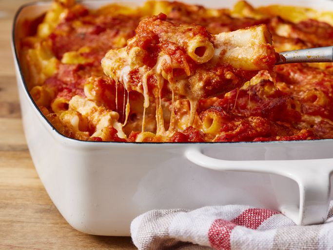

Back to Home
Ziti Recipe

Description
A delicious ziti recipe
Ingredients
-
Italian Sausage: This recipe starts with a homemade meat sauce that is
made with ground Italian sausage. The sausage is stuffed with tons of
herbs and spices, which brings a lot of flavor to the dish. You can use
hot, mild, or sweet Italian sausage.
-
Onion: A little onion cooked down into the red sauce gives it a
delicious subtle sweetness.
-
Tomato Paste and Crushed Tomatoes: We use two types of canned tomatoes
to give the red sauce a rich flavor and texture. The crushed tomatoes
create the body of the sauce without being too chunky while concentrated
tomato paste thickens the sauce and makes the tomato flavor extra rich.
-
Italian seasoning: To keep this recipe simple, we use an Italian
seasoning blend to season the sauce rather than several individual herbs
and spices.
-
Ziti: This is a smooth, tube-shaped pasta that is perfect for this cozy
casserole. If you can’t find ziti pasta at your local store, I’ve shared
some of my favorite substitutions below!
-
Cheese: This hearty pasta casserole contains a blend of several cheeses:
ricotta, mozzarella, and a shredded Italian cheese blend.
Steps
-
Brown the sausage in a large skillet or pot over medium heat, until it's
brown and crispy on the edges (pork sausage contains a lot of fat, so I
didn't add any extra to the skillet).
-
While the sausage is browning, finely dice the onion. Add the onion to
the skillet once the sausage has browned, and continue to sauté over
medium heat until the onion is soft and translucent.
-
Add the tomato paste, crushed tomatoes, Italian seasoning, and ½ cup
water to the skillet with the sausage and stir to combine. Place a lid
on the skillet and allow it to come up to a simmer. Once simmering, turn
the heat down and allow it to continue to simmer while you cook the
ziti. Stir the sauce occasionally as it simmers.
-
After getting the sauce started, begin the ziti. Bring a large pot of
water with ½ Tbsp salt to a boil over high heat. Once boiling, add the
ziti, and let it continue to boil until tender (about 7-8 minutes).
Drain the pasta in a colander. Shake the colander a bit to shake excess
water out of the pasta.
-
While the pasta and sauce are cooking, prepare the cheese filling. Add
the ricotta, Italian cheese blend, and some freshly cracked black pepper
(about 10 cranks of a pepper mill) to a bowl and stir to combine. Begin
to preheat the oven to 350ºF.
-
After draining the ziti, return it to the pot and add 1 cup of the red
sauce. Stir to coat the cooked pasta in sauce.
-
Pour half of the ziti to a 9×13" baking dish. Add half of the ricotta
mixture on top of the pasta in small dollops. Finally, spoon half of the
red sauce and sausage over the pasta and ricotta. It's okay if the
ingredients don't cover in a solid layer. Repeat these layers with the
second half of the pasta, ricotta mixture, and sauce. Finally, top with
2 cups shredded mozzarella.
-
Cover the baking dish with foil, making sure it's slightly tented so
that it doesn't touch or stick to the melted cheese. Transfer the
covered casserole to the oven and bake for 20 minutes.
-
After baking for 20 minutes, remove the foil, and turn the oven on to
broil (keep the casserole on the middle rack, about 10-12 inches from
the broiler). Broil for 5 minutes, or just until the cheese is slightly
browned. Keep a close eye on the baked ziti as it broils, because
broilers can vary in intensity. Top with chopped parsley, if desired,
then serve.